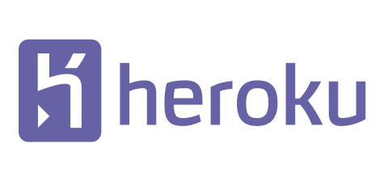
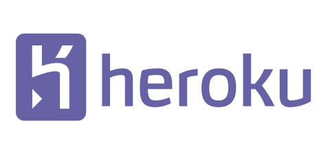
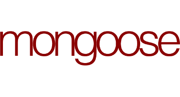
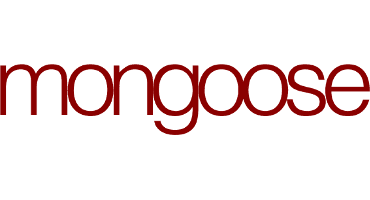
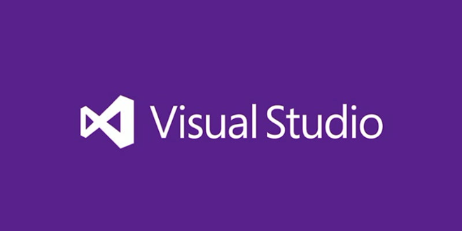
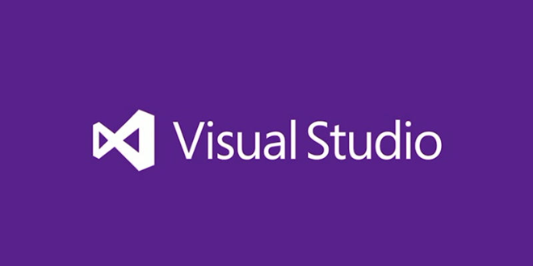

2018-Present
Completed University of Central Florida's Coding Boot Camp and created Project Codex, a web design company driven by pioneering problem-solvers with backgrounds across numerous industries

Seeking Front End Web Development roles where I can demonstrate my creativity and passion for coding while having fun and making a difference. Full Stack Web Developer with six months experience in web design and development. Eleven years management experience in Corporate Social Responsibility, Corporate Communications and Marketing Communications primarily working in the Media and Entertainment, Telecommunications and Nonprofit industries.
Known for being a highly creative problem-solver with an outstanding track record of developing innovative solutions. Recognized for data-driven decision making, solid verbal and written communication skills, and being an independent and team contributor.
Avid world traveler. Life-long Education and After School advocate.
Completed University of Central Florida's Coding Boot Camp and created Project Codex, a web design company driven by pioneering problem-solvers with backgrounds across numerous industries
Created Dynamic Social Responsibility, a consulting firm delivering creative dynamic CSR solutions for small, medium, and large companies to drive impact based on research-driven strategies.
Served as Director of Corporate Social Responsibility (CSR) at Bright House Networks, the sixth largest cable operator in the country. Reported to the Vice President of Corporate Communications and led all aspects of CSR and managed department budget and operations till the company was sold in August 2016.
Served as Assistant Manager, Finance and Operations, Corporate Social Responsibility at Time Warner Inc., the largest media and entertainemtn company. Reported to the Vice President of Corporate Relations and managed all department financials, operations, and cross-divisional collaboration projects and employee philanthropic programs.


 



 


 

© Copyright 2018 Reinaldo Llano, Jr.